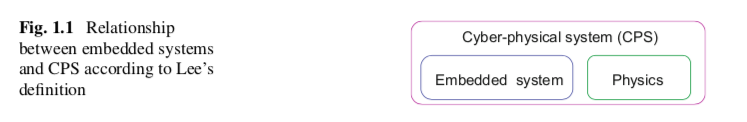

ES Zusammenfassung¶
Kapitel 1 Introduction¶
History of Terms¶
Definitionen¶
Zu ES¶
- Marwedel
- Embedded systems are information processing systems embedded into enclosing products.
- VL
- Embedded systems are information processing systems embedded into a larger product
Also Systeme, die Information verarbeiten und in ein groesseres Produkt "eingebettet" sind.
Anders:
ES sind systeme, die Software bereit stellen, die durch die Verarbeitung von Sensor Signalen/ Physikalischen Prozessen ein Physikalisches/ Reelles Product um Features/ Verbesserungen ergaenzt.
Dabei ist insbesondere das Management von Zeit und Concurenxy im system wichtig.
Zu CPS¶
- VL/ Buch
- Cyber-Physical Systems are integrations of computation with physical processes
Also: \(CPS = ES + physics\)
Bzw.: Es muss die Physikalische Umgebung mit beruecksichtigt werden

Opportunities¶
Die Verarbeitung von Informationen im Kontext von CPS oder dem IoT(Internet of Things) findet unter anderem Anwedung in den Folgenden Gebieten:
- Transport
- Automobilelektronik
- ABS, ESP, GPS etc.
- Flugzeug/ avionics
- flight control
- anti collision
- pilot information
- power supply
- flap control
- entertainment
- autopilot
- Zug/ railroad
- safety features
- ETCS (The European Train Contral System)
- Schiffe/ water ways
- Navigation
- safety
- Buchhaltung
- Logistics
- RFID (Radio frequency identification)
- Mobile communication
- energy minimization
- Fabrication/ Factory automation
- social machines (self configuration/ distribution)
- Structural Safety
- Regulation des Wasserstandes eines Damms
- Ueberwachung von Bruecken/ Vilkanen
- Neigung von Hochhausern bei Erdbeben
- Smart Home
- zero energy buildings
- safety/ security
- comfort
- ambient assited living (selbst regulierende Fenster etc.)
- Physical/ Science Experiments
- obeservation of outcomes
- Telecommunication
- Consumer electronics
- Robotics
- Public safety
- Military Systems
Es besteht die Moeglichkeit vorher isolierte Systeme nun zu verbinden.